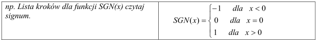
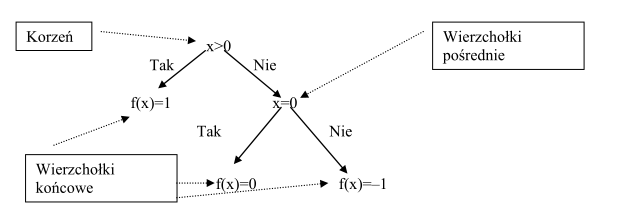
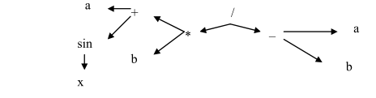

Programowanie to proces składający się z etapów:
a) tworzenia programu,
b) testowanie programu.
a)Reguły syntaktyczne -> reguły składni wyrażeń i funkcji użytych w programie,
b)Reguły semantyczne -> semantyka języka programowania definiuje precyzyjnie znaczenie
poszczególnych symboli (instrukcje, operatory itp.) oraz ich funkcję w programie.
Definicja 1.
Algorytm -> jest to pewien ciąg czynności, który prowadzi do rozwiązania danego problemu
w skończonej ilości kroków.
Definicja 2.
Algorytm -> to jednoznaczny przepis, opisujący krok po kroku sposób postępowania w celu
rozwiązania pewnego problemu lub sposobu osiągnięcia jakiegoś celu.
Ilość kroków algorytmu zależy od tego, jak złożony jest problem, którego on dotyczy. Zawsze
jednak liczba tych kroków będzie liczbą skończoną.
Cechy charakterystyczne poprawnego algorytmu:
1. Poprawność
2. Jednoznaczność
3. Szczegółowość
4. Uniwersalność
5. Skończoność
6. Efektywność
Etapy konstruowania algorytmu(programu):
1. Sformułowanie zadania.
2. Określenie danych wejściowych.
3. Określenie wyniku oraz sposobu jego prezentacji.
4. Ustalenie metody wykonania zadania.
5. Przy użyciu wybranej metody następuje zapisanie algorytmu.
6. Dokonujemy analizy poprawności rozwiązania.
7. Testowanie rozwiązania dla różnych danych.
8. Ocena skuteczności tegoż algorytmu.
a)opis słowny
Jest na ogół pierwszym, mało ścisłym opisem sposobem rozwiązania problemu. Rozpoczyna
się często dyskusją, w jaki sposób można rozwiązać postawione zadanie. Dyskusja służy do
rozważań nad sposobem i technikami przydatnymi w rozwiązania problemu.
np. Opis słowny do algorytmu opisującego funkcję modułu (wartość bezwzględną).
Dla wartości dodatnich argumentu x funkcja przyjmuje wartość x, dla wartości
argumentu x funkcja przyjmuje wartość –x.
b)schemat
c)lista kroków
Poszczególne kroki zawierają opis operacji, które mają być wykonane prze algorytm. Mogą w
nich również wystąpić polecenia związane ze zmianą kolejności wykonywanych kroków.
Kolejność kroków jest wykonywana w kolejności ich opisu z wyjątkiem sytuacji gdy jedno z
poleceń w kroku jest przejściem do kroku o podanym numerze. Budowa opisu algorytmu w
postaci listy kroków jest następujący:
- tytuł algorytmu
- specyfikacja problemu
- lista kroków
- komentarze ujęte w nawiasy klamrowe {komentarz}
uwaga: Krok 0 może być opuszczony

Algorytm obliczania wartości funkcji SGN(x)
Dane: Dowolna liczba rzeczywista x.
Wynik: Wartość funkcji
Krok 0.
Wczytaj wartość danej x
Krok 1.
Jeśli x>0, to f(x)=1. Zakończ algorytm.
Krok 2.
{W tym przypadku x<= 0.} Jeśli x=0, to f(x)=0 . Zakończ algorytm.
Krok 3.
{W tym przypadku x< 0.} Mamy f(x)=–1 . Zakończ algorytm. </p>
d)drzewo algorytmu
Nazywany jest również drzewem obliczeń. Każde dwie drogi obliczeń mogą mieć tylko
początkowe fragmenty wspólne, ale po rozejściu już się nie spotkają.
np. Drzewo algorytmu dla funkcji SGN(x).

e)drzewo wyrażeń
Stosowane do obliczeń wyrażeń arytmetycznych.
np. Wyrażenie (a+sin(x))*b/(a–b)

f)program w języku programowania np. C++, Pascal
g)pseudojęzyk
PROGRAM Wycieczka;
ZMIENNE punkty:naturalne;
koszty, dofinansowanie:rzeczywiste;
ZACZNIJ;
WPROWADŹ(PUNKTY,KOSZTY);
JEŚLI punkty >=100 i punkty <= TO dofinansowanie :=1/3*koszty+0.2*koszty
W PRZECIWNYM WYPADKU
dofinansowanie:=0.2*koszty;
WYPROWADŹ('Dofinansowanie wynosi:'dofinansowanie);
ZAKOŃCZ.